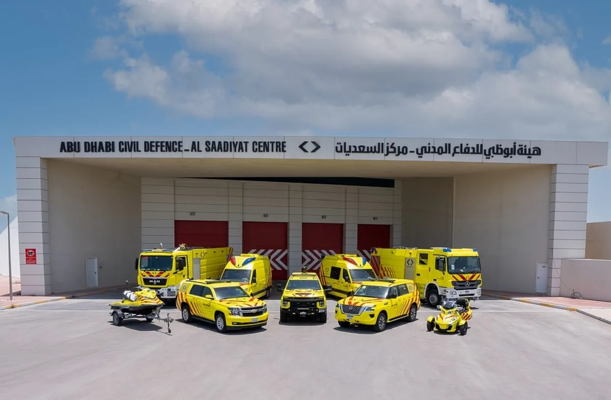

Innovent tagged every piece of firefighting equipment with RFID across 10 Abu Dhabi Civil Defense stations — verifying automatically what is on the truck and what is missing, before and after every mission, and integrating the result with the agency's ERP and readiness platform.

Innovent tagged every piece of firefighting equipment across 10 stations with RFID and made the appliance itself the reader. Loading an appliance now produces a record rather than a signature: the system knows what is aboard, what is missing and what came back, and writes that state into the agency's ERP and readiness platform without anyone retyping it.
Every firefighting equipment item carries a rugged RFID tag, registered once against its ERP asset record.
The appliance reads its own load, so what is aboard and what is missing is known without a manual count.
Loading produces an automatic readiness record before the appliance leaves the station.
On return the same read flags anything not recovered, while the scene is still reachable.
Asset state, stock levels and maintenance status flow straight into the agency's ERP with no re-entry.
Station and appliance readiness is derived from real per-item data rather than declared.
A crew leaves the station knowing exactly what is on the truck, and returns knowing exactly what came back — without a clipboard in sight.
If you run a national-, state- or city-level safety, defense or critical-infrastructure agency, our solutions team will walk your environment, your systems, and your operators' day — and show what an agentic operating layer would change.